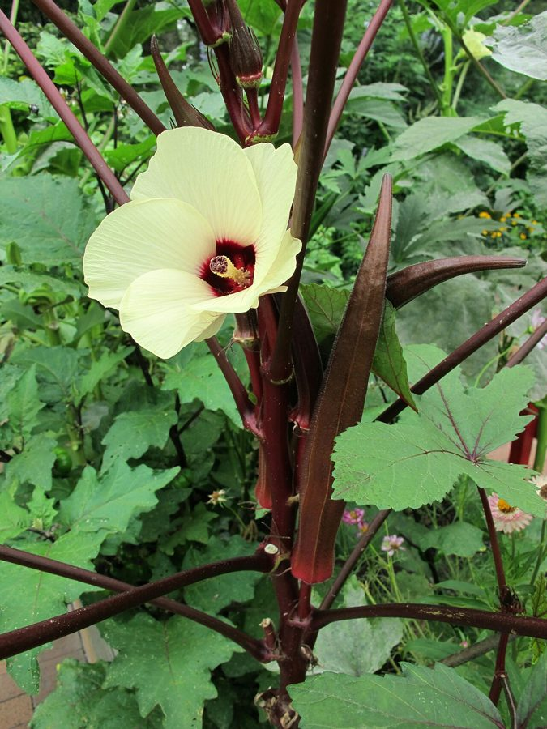

भिंडीOkra
Abelmoschus esculentus · Malvaceae · FLR-0172

- Scientific name
- Abelmoschus esculentus (L.) Moench
- Family
- Malvaceae
- Hindi
- भिंडी
- Local names
- bhindi, lady's finger, okra, gumbo, okro
- Status here
- cultivated
- Movement
- Resident, here all year
- IUCN
- not evaluated
- Review
- audited and independently read
When to look कब देखें
Expected mainly in May, June, July, August, September, October.
Uses and possibilities उपयोग और संभावनाएँ
“Traditional medicine” means a documented traditional use, not a claim that it works. Nothing on this page is medical advice.
Drawn from the documented uses in the profile below, where each is labelled traditional, current or a research lead. All uses →
भिंडी / Okra
Abelmoschus esculentus (L.) Moench — Malvaceae
भिंडी (लेडी फिंगर, ढेंडी) — गर्मी-बरसात की सबसे आम सब्जी, जिसे हर घर में उगाया जाता है। झाड़ी जैसा पौधा, 0.5-1.5 मीटर ऊँचा, पत्तियाँ बड़ी, भिन्न-भिन्न सिरे वाली। पीले-गुलाबी फूल सुंदर, रोज़ नए फूल खिलते हैं। फल लंबा, पाँच-पहलू वाला, हरा, 10-15 सेंटीमीटर, जिसे कच्चा ही तोड़कर सब्जी बनाई जाती है। पूरी गर्मी अप्रैल से अक्टूबर तक फल देता है। मिश्रित सब्जी में सबसे आम, और सबसे आसान उगाई जाने वाली सब्जी।
Quick Identification त्वरित पहचान
| Feature | Description |
|---|---|
| Plant form | Annual herb, erect, 0.5–1.5 m tall, unbranched or sparsely branched |
| Leaves | Alternate, palmately lobed, 10–20 cm, rough surface, on long petioles |
| Flowers | Yellow or pale yellow with dark red or purple center, 5–7 cm, solitary, axillary |
| Fruits (pods) | Elongate, 10–15 cm, pentagonal (5-angled), bristly, green, containing numerous round seeds |
| Stems | Sturdy, green, with fine bristles; no branching in typical cultivars |
Field tip: A tall, unbranched, sturdy annual plant with large lobed leaves and striking pale yellow flowers with a dark center. Below each flower is a distinctively angular, finger-like pod. Look for it in warm-season vegetable gardens.
Morphology आकारिकी
Biometrics (typical measurements for cultivated bhindi in northern India):
| Measurement | Range |
|---|---|
| Plant height | 0.5–1.5 m |
| Leaf length | 10–20 cm |
| Leaf width | 8–18 cm |
| Flower diameter | 5–7 cm |
| Pod length | 10–15 cm |
| Pod width (at widest) | 1–1.5 cm |
Root system: Taproot with fibrous laterals, extending 30–50 cm deep.
Stems: Sturdy, green, cylindrical, with sparse fine bristles or hairs, unbranched in most cultivars, becoming slightly woody at the base.
Leaves: Alternate, palmately lobed (usually 5–7 lobes), large, rough-textured due to fine bristles, deep green. The petiole is long. The leaf margin is toothed.
Flowers: Large, attractive, with 5 petals, typically pale yellow or creamy with a dark red or purple center (the "eye"). The flower opens in the morning and closes by afternoon. Flowers are solitary, arising from leaf axils.
Fruits (pods): Distinctive pentagonal (5-angled) capsules, elongate, 10–15 cm, green when immature (and edible at this stage), covered with fine bristles or hairs that may cause slight itching. At maturity, the pod becomes fibrous, tough, and inedible. The interior contains numerous round, dark seeds arranged in 5 rows (matching the 5 angles).
Seeds: Round to slightly flattened, 3–5 mm, dark colored.
हिंदी: सीधा, मजबूत पौधा। बड़ी, खुरदरी पत्तियाँ। पीले फूल, काले दिल के साथ। पाँच-कोने की फली, हरी, लंबी।
Behaviour & Ecology व्यवहार और पारिस्थितिकी
A tropical annual vegetable of African origin, now cultivated worldwide in warm climates. Abelmoschus esculentus is a warm-season plant that germinates readily from seed and grows quickly in summer. The plant thrives in well-drained soils, full sun, and consistent warmth (18–30°C optimal, with minimum 15°C for growth). It is sensitive to cold and frost and dies completely after the first frost.
The plant is relatively hardy and low-input, requiring minimal pest management. The flowers attract bees and other pollinators. The plant can self-pollinate but benefits from cross-pollination. Once the plant is established, it flowers and fruits continuously throughout the warm season, providing fruits for months.
हिंदी: गर्मी की सब्जी, ठंड में मर जाती है। कम देखभाल में चलती है। अच्छी धूप चाहिए। हर दिन नए फूल, हर दिन नई फली।
Life Cycle / Phenology जीवन चक्र
| Month / Season | Event |
|---|---|
| March–April | Seed germination; seedling establishment |
| April–May | Rapid vegetative growth; plant height increase |
| May–June | Flowering begins; first pod set |
| June–September | Continuous flowering and fruit production; peak harvest |
| July–October | Continued harvesting of immature pods |
| October onwards | Plant decline; frost sensitivity; final harvest |
From seed to first flower: 6–8 weeks. From flower to harvestable pod: 3–5 days.
हिंदी: मार्च-अप्रैल में बीज, मई में फूल शुरू, जून-सितंबर में खूब फली, अक्टूबर तक तोड़ते हैं।
Cultivation Calendar कृषि कैलेंडर
| Stage | Month(s) |
|---|---|
| Field preparation | March–April |
| Seed sowing (direct or transplant) | April–May |
| Germination and seedling establishment | April–May |
| Vegetative growth; plant height to 50 cm | May–June |
| Flowering initiation and first pod set | June |
| Continuous flowering and fruiting | July–September |
| Peak harvest (tender, immature pods) | June–September |
| Extended harvest (smaller yields) | September–October |
| Plant decline and frost damage | November onwards |
Associated Species / Interactions संबंधित प्रजातियाँ
- Intercropping: Often grown with Onion, cucumber, and other summer vegetables.
- Rotation: Follows winter crops like Wheat and Chickpea.
- Garden companions: Common in kitchen gardens (bari) with basil, cilantro, and other herbs.
- Pollinator support: Flowers attract bees and other pollinators.
Pests and Diseases कीट और रोग
- Shoot and fruit borer: Earias vittella (spotted bollworm); larvae tunnel into developing pods; spray with neem or insecticide if severe.
- Leaf-eating insects: Grasshoppers, crickets, and caterpillars may damage leaves; usually not serious.
- Powdery mildew: White fungal coating on leaves; spray with sulfur if conditions are humid.
- Yellow vein mosaic virus (YVMV): Transmitted by whiteflies; causes yellowing and distortion of leaves; no cure; remove infected plants.
- Generally hardy: Bhindi is relatively pest-resistant compared to many vegetables.
Agricultural / Human Relevance कृषि प्रासंगिकता
Vegetable use: The immature, tender pods, harvested when 3–5 days after flowering (at 5–10 cm length), are cooked as a vegetable. The pods are cut into thin slices, fried with onion, garlic, and spices, producing a dry curry (sukha sabzi) or a moist curry. The vegetable has a characteristic mucilaginous (sticky) texture due to the polysaccharide-rich interior, which many people enjoy and others dislike. The pods are entirely edible at this tender stage.
Nutritional value: Tender pods are rich in vitamin C, folate, and fiber. The mucilage is considered beneficial in traditional medicine for soothing the digestive tract. Okra is low in calories (about 30 kcal per 100 g).
Culinary traditions: In Indian cuisine, bhindi is most commonly prepared as bhindi fry — a dry curry where sliced pods are fried until crispy. It is also cooked with tomato and spices in a curry (bhindi masala). The vegetable is a staple in mixed vegetable dishes.
Ease of cultivation: Bhindi is one of the easiest vegetables to grow. It requires minimal inputs beyond land and water. The plant is self-fertile and produces abundant fruit without fertilizer on moderately fertile soils. Farmers save seed easily; seed from a single plant can be saved and replanted.
Common varieties: Local landrace varieties are common in eastern UP. Improved varieties include Pusa Sawani, Pusa Bahar, Clemson Spineless, Emerald, and others, many developed by agricultural research institutions.
Seed production: Bhindi seed is easy to save. Mature pods are left to dry on the plant; dried pods are opened, and seeds are extracted and dried further for storage.
हिंदी: बहुत सीधी, बहुत आम सब्जी। कम से कम देखभाल में चलती है। हर दिन फली तोड़ते हैं, गर्मी भर चलती है।
Expected Locally स्थानीय रूप से अपेक्षित
Not a field record. Written from published accounts for eastern Uttar Pradesh. No confirmed local sighting yet — if you have seen it, that is what the atlas needs.
अभी तक स्थानीय पुष्टि नहीं। यह विवरण प्रकाशित स्रोतों से है, किसी अवलोकन से नहीं।
Expected as a common cultivated vegetable in homestead gardens and vegetable fields throughout Basti district, visible during the warm season (May to October). Fresh pods are sold in all local vegetable markets during summer and monsoon. The distinctive tall plants with pale yellow flowers and angular green pods are easily recognizable.
Distribution वितरण
Global range: Native to Africa; now cultivated in tropical and subtropical regions worldwide.
In India: Widely cultivated as a summer vegetable throughout the country, particularly in southern and central regions.
In Uttar Pradesh: Common in summer vegetable cultivation throughout the state.
In Basti district / eastern UP: Very common as a cultivated summer vegetable in all agricultural blocks.
Research Questions शोध प्रश्न
Anyone can investigate these | कोई भी इन प्रश्नों की जाँच कर सकता है
- How many pods does one bhindi plant produce from start to finish, and over what time period? — Follow one plant from first flower to last fruit; count all pods.
- What is the best harvest stage for tenderness and cooking quality: 5 cm, 10 cm, or 15 cm length? — Harvest at each size; cook and taste; record consumer preference.
- Do bees or other insects prefer bhindi flowers in the morning or afternoon, and how long is the flower open? — Observe flowers; count pollinators at different times; time flower opening and closing.
- Can bhindi seed saved from one plant be replanted the next season, and does the variety breed true? — Save seed; replant next year; document results.
- Which variety of bhindi (Pusa Sawani, Clemson Spineless, or a local landrace) has the highest yield in your area? / आपके इलाके में कौन सी किस्म ज़्यादा देती है? — Compare two or more varieties side by side.
Similar Species मिलती-जुलती प्रजातियाँ
| Species | How to tell apart | हिंदी |
|---|---|---|
| Abelmoschus moschatus (Musk Okra) | Smaller plant; leaves more deeply lobed; flowers more fragrant; rare in cultivation | सुगंधित अबेलमोस्कस — अलग गंध |
| Hollyhock (Alcea rosea) | Taller, many-branched; flowers larger, many colors; ornamental, not edible fruits | गुलखैरा — कई शाखें, रंगीन फूल |
Field rule: An erect, unbranched annual plant 0.5–1.5 m tall, with large, palmately lobed leaves; pale yellow flowers with a dark center; and distinctive, long, pentagonal (5-angled), green, bristly pods harvested tender is bhindi.
Taxonomy & Classification वर्गीकरण
Original description. Originally described by Linnaeus as Hibiscus esculentus in 1753 and later reclassified as Abelmoschus esculentus by Moench. The genus name Abelmoschus is from the Arabic Abu and Mosch, meaning "father of musk," referring to the musky smell of related species. The specific name esculentus means "edible."
Subspecies. Monotypic — no subspecies are currently recognised.
Family and order placement. Malvaceae, order Malvales. The family includes hibiscus, cotton, and other showy-flowered plants.
Phylogenetic notes. Abelmoschus esculentus is related to A. moschatus (a species with similar but musk-scented flowers) and other African Abelmoschus species.
IUCN status rationale. Not evaluated. Widely cultivated; not assessed for conservation status.
Photo Gallery फोटो गैलरी
Photos needed आवश्यक फोटो
- [ ] Whole plant showing height and leaf structure
- [ ] Close-up of pale yellow flower with dark center
- [ ] Immature green pods on the plant at harvest stage
- [ ] Mature dried pod showing seed arrangement
No photos yet — add field photos to media/species/bhindi/ and run node scripts/sync_photos.js.
References संदर्भ
- Linnaeus, C. (1753). Species Plantarum. Laurentii Salvii, Stockholm, Vol. 2, p. 966 [as Hibiscus esculentus].
- Moench, C. (1794). Methodus Plantas, p. 617.
- Hooker, J.D. (1875). Flora of British India, Vol. 1. L. Reeve & Co., London.
- Indian Council of Agricultural Research (2021). Handbook of Agriculture. ICAR, New Delhi.
- Chadha, K.L. (2010). Handbook of Horticulture. Indian Council of Agricultural Research, New Delhi.
- GBIF Occurrence Data — Abelmoschus esculentus, India (2015–2026).
Source file: species/flora/crops/bhindi.md